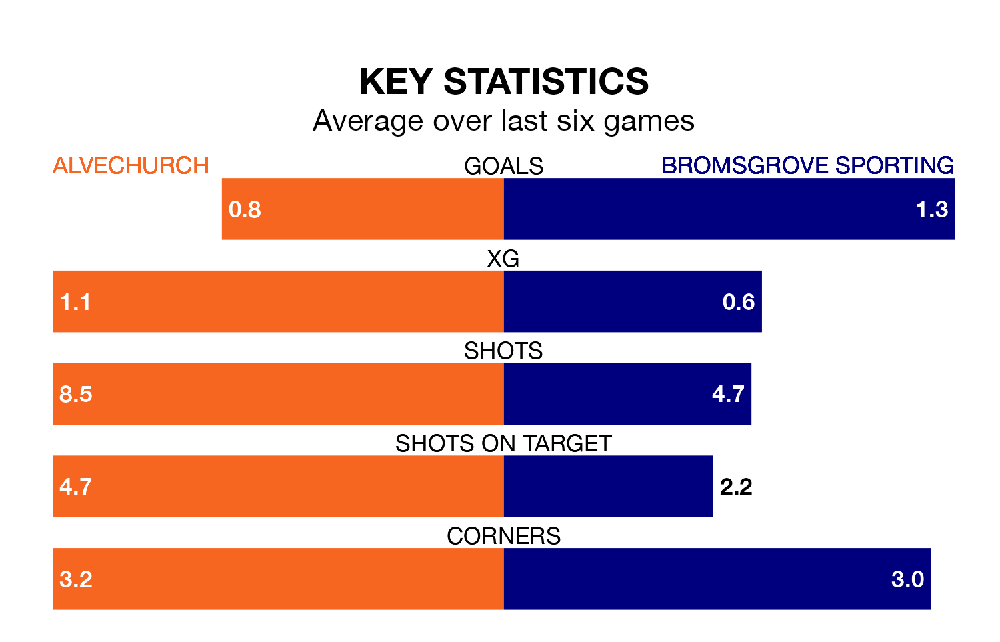

Alvechurch welcome Bromsgrove Sporting to Lye Meadow on Saturday looking to pick up points to end their three-game losing streak.
Alvechurch's struggles have left them with just four points from their last six Southern League Premier – Central matches, while their opponents have earned seven from a possible 18.
In the last 10 years, Alvechurch and Bromsgrove Sporting have played each other on seven occasions. Alvechurch won three of them, Bromsgrove Sporting two, and they drew twice.
On average, Alvechurch scored 1.7 goals and Bromsgrove Sporting 1.6 in those matches.
Their last meeting was on November 21, when they played out a 1-1 draw.
Bromsgrove Sporting are 18th in the table after 37 games, of which they have won 11 and drawn eight, earning 41 points.
Alvechurch are one place ahead of the visitors in 17th, with 11 wins and nine draws putting them on 42 points.
With 42 goals in 37 games so far this season, Bromsgrove Sporting are scoring at below the league average rate with 1.1 goals per game. But they are conceding fewer than average too, letting in 48 goals at a rate of 1.3 per game.
The home side are also below average scorers, with 1.3 goals per game, compared to a league average of 1.5. They have conceded 1.8 goals per game.
Alvechurch's last match was on Monday, a 1-0 loss against Halesowen Town.
Bromsgrove Sporting lost 2-1 against AFC Telford United last time out, also on Monday.
Updated: 16:41 (UTC), 04/04/24